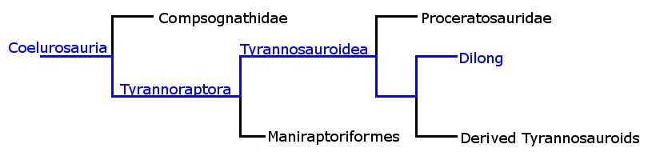
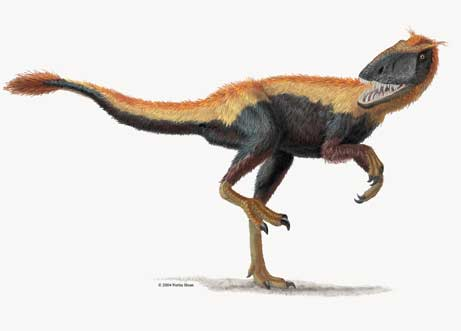

Unravelling the Evidence
Specimens:
Name: Dilong paradoxus
{kind=link}
Age: ~130 million years
Size: 1-2m long
Dilong was a basal Tyrannosaurid with a much more generalised layout than later Tyrannosaurs - think of the tiny forelimbs and enormous skull of Tyrannosaurus, which was much more derived. Dilong is another find from Liaoning province, and like many other dinosaurs found there it appeared to have feathers. These feathers were in a downy coat, indicating that Tyrannosaurs were warm blooded.
Because Dilong is classed at the base of the Tyrannosaur tree, the presence of feathers implies that any of the more derived Tyrannosaurs could also have had feathers and been warm blooded. It is also one of the most basal of the Saurischians to be found with feathers, although they are common in later dinosaurs (the Maniraptoriformes maked on the phylogenetic tree).
Unlike Longisquama or Tianyulong, Dilong's feathers are not disputed as being the same evolutionary structure as in birds and their relatives. The description of Dilong in 2004 is a good example of how the diversity of [undisputed] apparently feathered dinosaurs is growing all the time, and it would not be a surprise if feathers are eventually found outside of the Coelurosauria, in even more basal Saurischians.
References:
Brusatte, S.L. et al., 2010. Tyrannosaur Paleobiology: New Research on Ancient Exemplar Organisms. Science, 329(5998), pp.1481 -1485.
Xu, X. et al., 2004. Basal tyrannosauroids from China and evidence for protofeathers in tyrannosauroids. Nature, 431(7009), pp.680-684.
Image Credit:
Roach, J., 2004. New Dinosaur Discovered: T. Rex Cousin Had Feathers. National Geographic News. Available at: http://news.nationalgeographic.com/news/2004/10/1006_041006_feathery_dino.html [Accessed December 11, 2010].